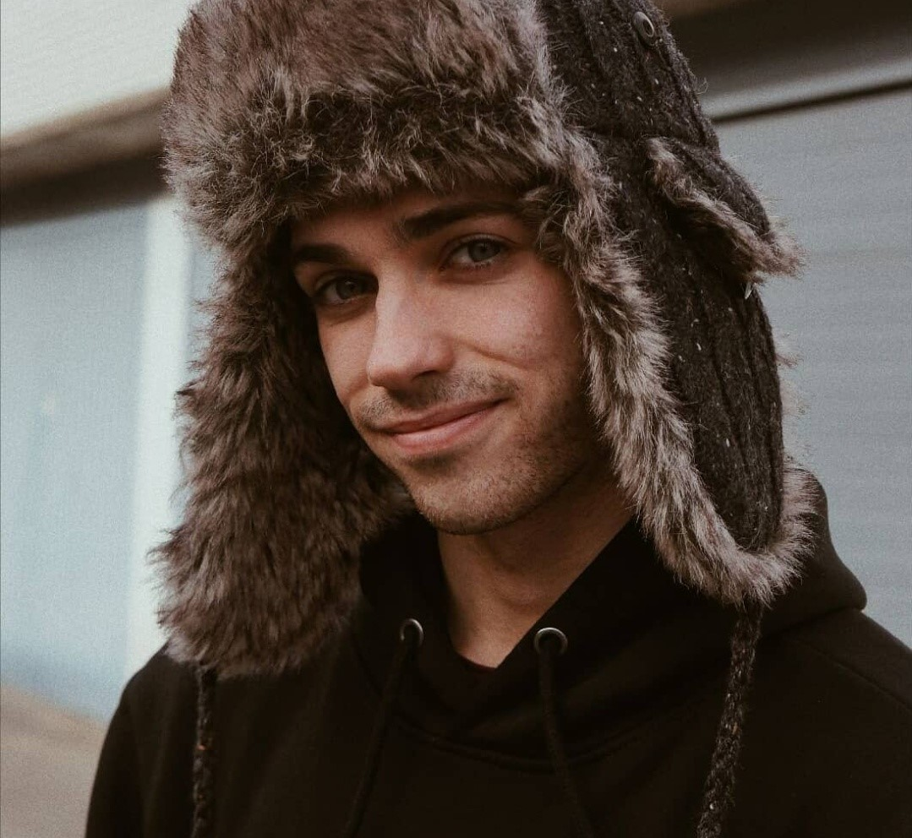

About me
I am Borin, a Spanish guy from the small city of Girona. I like chess, freediving, yoga, calistenichs and small motorbikes. I will become an ATSEP
some day, that is my main goal in life.
My favourite music is this one.
and now I should add a small resume for myself.